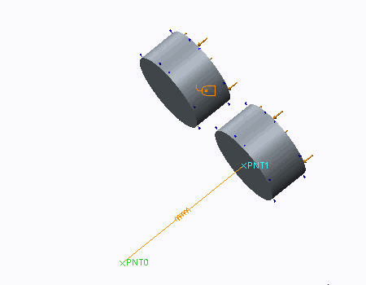
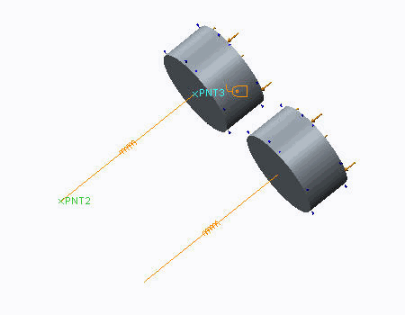
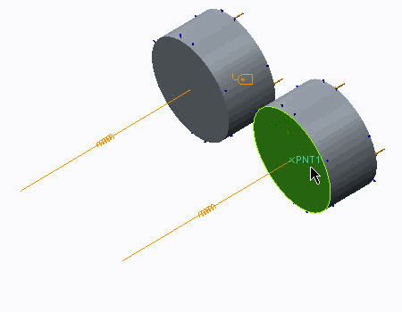

过程: 创建弹簧
“关闭窗口”(Close Window)
 “拭除未显示的”(Erase Not Displayed)
“拭除未显示的”(Erase Not Displayed) 
 Simulate_Modeling\Springs
Simulate_Modeling\Springs
 PISTON-SPRING_SIMULATE.PRT
PISTON-SPRING_SIMULATE.PRT
|
|
||
 |
Creo Parametric 用户打开 PISTON-SPRING.PRT。 | |
|
|
||
-
任务 1. 定义弹簧理想化。
1. 在功能区中，选择“精细模型”(Refine Model) 选项卡。
2. 在“理想化”(Idealizations) 组中单击“弹簧”(Spring) 。将出现“弹簧定义”(Spring Definition) 对话框。
3. 在模型中，选择 PNT0 作为第一参考并选择 PNT1 作为第二参考，如图所示。

4. 在“延伸刚度”(Extensional Stiffness) 字段中键入 2800。
5. 在“扭转刚度”(Torsional Stiffness) 字段中键入 1e10。
6. 单击“确定”(OK)。
7. 在功能区中，选择“精细模型”(Refine Model) 选项卡。
8. 在“理想化”(Idealizations) 组中单击“弹簧”(Spring) 。将出现“弹簧定义”(Spring Definition) 对话框。
9. 在模型中，选择 PNT2 作为第一参考并选择 PNT3 作为第二参考，如图所示。
10. 在“属性”(Properties) 部分中，从“延伸力-偏转变化”(Extensional Force-Deflection Variation) 下拉菜单中选择“力-偏转曲线”(Force-Deflection Curve)。
11. 单击 f(x)。将出现“函数”(Functions) 对话框。
12. 单击“新建”(New)。将出现“函数定义”(Function Definition) 对话框。
13. 完成以下步骤：
- 在“名称”(Name) 字段中，键入 quadratic_relation。
- 在“符号表达式”(Symbolic Expression) 字段中，键入 deflection^2。
14. 单击“确定”(OK) 返回到“函数”(Functions) 对话框。
15. 在“警告”(Warning) 对话框中单击“确定”(OK)。
16. 在“问题”(Question) 对话框中单击“否”(No)。
17. 单击“确定”(OK) 返回到“弹簧定义”(Spring Definition) 对话框。
18. 在“力因子”(Force Factor) 字段中键入 11.09188。
19. 在“扭转刚度”(Torsional Stiffness) 字段中键入 1e10。
20. 单击“确定”(OK)。
-
任务 2. 定义受力连接的连接。
1. 在功能区中，选择“精细模型”(Refine Model) 选项卡。
2. 从“连接”(Connections) 组中单击“受力连接”(Weighted Link) 。将出现“受力连接定义”(Weighted Link Definition) 对话框。
3. 从“独立侧”(Independent Side) 下拉菜单中选择“曲面”(Surfaces)。
4. 在模型中，选择显示的曲面。
5. 在“从属侧”(Dependent Side) 部分中的“点”(Point) 字段中单击。在模型中，选择PNT1。
6. 单击“确定”(OK)。
-
任务 3. 定义监视弹簧行为的测量。
1. 在功能区中，选择“主页”(Home) 选项卡。
2. 在“运行”(Run) 组中单击“测量”(Measures) 。将出现“测量”(Measures) 对话框。
3. 单击“新建”(New)。将出现“测量定义”(Measure Definition) 对话框。
4. 完成以下步骤：
- 在“名称”(Name) 字段中，键入 Force_linear_spring。
- 从“数量”(Quantity) 下拉菜单中选择“力”(Force)。
- 从第二个“数量”(Quantity) 下拉菜单中选择“弹簧”(Spring)。
- 从“分量”(Component) 下拉菜单中选择 Z。
- 在“空间评估”(Spatial Evaluation) 部分中，单击“选择参考”(Select Reference) 。在模型树中，展开“理想化”(Idealizations) 和“弹簧”(Springs) 并选择 Spring1。
5. 单击“确定”(OK) 返回到“测量”(Measures) 对话框。
6. 单击“关闭”(Close)。
7. 在功能区中，选择“主页”(Home) 选项卡。
8. 在“运行”(Run) 组中单击“测量”(Measures) 。将出现“测量”(Measures) 对话框。
9. 单击“新建”(New)。将出现“测量定义”(Measure Definition) 对话框。
10. 完成以下步骤：
- 在“名称”(Name) 字段中，键入 disp_linear_spring。
- 从“数量”(Quantity) 下拉菜单中选择“位移”(Displacement)。
- 从“分量”(Component) 下拉菜单中选择 Z。
- 在“空间评估”(Spatial Evaluation) 部分，从下拉菜单中选择“在点处”(At Point) 并单击“选择参考”(Select Reference) 。在模型中，选择PNT1。
11. 单击“确定”(OK) 返回到“测量”(Measures) 对话框。
12. 单击“关闭”(Close)。
13. 在功能区中，选择“主页”(Home) 选项卡。
14. 在“运行”(Run) 组中单击“测量”(Measures) 。将出现“测量”(Measures) 对话框。
15. 单击“新建”(New)。将出现“测量定义”(Measure Definition) 对话框。
16. 完成以下步骤：
- 在“名称”(Name) 字段中，键入 Energy_linear_spring。
- 从“数量”(Quantity) 下拉菜单中选择“计算的测量”(Computed Measure)。
- 在“表达式”(Expression) 部分中键入 0.5*Force_linear_spring*disp_linear_spring。
17. 单击“确定”(OK) 返回到“测量”(Measures) 对话框。
18. 单击“关闭”(Close)。
19. 在功能区中，选择“主页”(Home) 选项卡。
20. 在“运行”(Run) 组中单击“测量”(Measures) 。将出现“测量”(Measures) 对话框。
21. 单击“新建”(New)。将出现“测量定义”(Measure Definition) 对话框。
22. 完成以下步骤：
- 在“名称”(Name) 字段中，键入 total_spring_energy_stored。
- 从“数量”(Quantity) 下拉菜单中选择“计算的测量”(Computed Measure)。
- 在“表达式”(Expression) 部分中键入 (0.5*Force_linear_spring*disp_linear_spring)+(1/3*11.09188*disp_nonlinear_spring^3)。
23. 单击“确定”(OK) 返回到“测量”(Measures) 对话框。
24. 单击“关闭”(Close)。
-
任务 4. 定义并运行非线性静态分析。
1. 在功能区中，选择“主页”(Home) 选项卡。
2. 在“运行”(Run) 组中单击“分析和研究”(Analyses and Studies)
 。将出现“分析和设计研究”(Analyses and Design Studies) 对话框。
。将出现“分析和设计研究”(Analyses and Design Studies) 对话框。
3. 单击“文件”(File) > “新建静态分析”(New Static)。将出现“静态分析定义”(Static Analysis Definition) 对话框。
4. 完成以下步骤：
- 在“名称”(Name) 字段中，键入 pressure_storage。
- 选择“非线性/使用载荷历史”(Nonlinear/Use Load Histories)。
- 在“非线性选项”(Nonlinear Options) 部分中，选择“非线性弹簧”(Nonlinear Springs)。
- 选择在“约束集/元件”(Constraint Set/Component) 和“载荷集/元件”(Load Set/Component) 部分中显示的约束集和载荷集。
- 选择“收敛”(Convergence) 选项卡，然后从“方法”(Method) 下拉菜单中单击“快速检查”(Quick Check)。
- 选择“输出”(Output) 选项卡。
- 完成以下步骤：
- 在“计算”(Calculate) 部分中，取消选择“应力”(Stresses) 和“旋转”(Rotations)。
- 在“绘制栅格”(Plotting Grid) 字段中键入 2。
- 从“输出步长”(Output Steps) 下拉菜单中选择“用户定义的输出步长”(User-defined Output Steps)。
- 在“主步长数”(Number of Master Steps) 字段中键入 21。
- 单击“用户定义的步长”(User-defined Steps)。
- 单击“等间距”(Space Equally)。
5. 单击“确定”(OK) 返回到“分析和设计研究”(Analyses and Design Studies) 对话框。
6. 在“确认”(Confirmation) 对话框中单击“确认”(Confirm)。
7. 单击“配置运行设置”(Configure Run Settings)
 。将出现“运行设置”(Run Settings) 对话框。
。将出现“运行设置”(Run Settings) 对话框。
8. 默认情况下，结果和临时输出目录被设置在工作目录中。两种分析都储存在此位置。单击“确定”(OK)。
9. 在“分析和设计研究”(Analyses and Design Studies) 对话框中，选择 pressure_storage，然后单击“开始运行”(Start Run)
 。单击“是”(Yes) 以运行交互诊断。
。单击“是”(Yes) 以运行交互诊断。
10. 分析完成后，单击“显示研究状况”(Display Study Status) 查看汇总报告。
请注意，全部两个蓄压器中存储的总弹簧能反映了总应变能，在模型中它恰好为默认测量。
11. 关闭所有对话框并返回到 Creo Simulate 窗口。
过程就此结束。